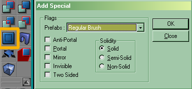

Add Special
This is a floating window in the UnrealEd Interface which allows the mapper to add special brushes. Summon it by clicking the square blue button in the toolbox's CSG operations group.

Add Special window |
The Prefabs drop-down list sets the flags automatically for certain predefined types. (Note that it's absolutely possible to create exactly the same effects by manipulating a regular brush manually.)
Tarquin: Not exactly, unfortunately ... I've often had problems with the following: add a sheet ZP as translucent. Change your mind and remove the translucent flag in the surface properties window. rebuild... the translucent flag (sometimes) returns  This might be because it's as single poly brush.
This might be because it's as single poly brush.
Mychaeel: But then I suppose the same would have happened if you had created that translucent sheet zone portal manually before by creating a sheet and setting its "translucent" and "zone portal" flags. There's hardly any special magic in "Add Special" – it's just for mappers' convenience.
Tarquin: You mean setting Polyflags in the brush? Yes. Add Special just determines the value of the PolyFlags and CSG property when the brush is created. A simple sheet brush would have no problem being switched from trans to non-trans surface flags, since there would be no Brush polyflags set. So from that point of view, there's greater flexibility in creating only standard brushes, then setting surface flags on all the polys. I use Add Special for ZPs, ICHs and masked textures. Regular semisolids I add and convert later.
Prefabs
- Invisible Collision Hull
- Used to create invisible brushes that block players and projectile. See Invisible Collision Hull.
- Masked Decoration, Masked Wall
- These are identical. Use with [masked texture]?s. Note that in most circumstances, you may want to also check the 2 Sided option.
- Regular Brush
- Just adds a normal brush. This is the same as clicking the Add button in the toolbox.
- Semisolid Pillar
- Adds a semisolid brush to the map.
- Transparent Window
- See Making Windows.
- Water
- See Making Liquids (UT).
- Zone Portal
- See Zone Portal, Zoning / Zoning. It's a good idea to check "2 sided" for zone portals so they are easier to see in UnrealEd.
Custom
The flags set the PolyFlags for the brush – see Surface Flags (UT).
The solidity radio button group sets the solidity.